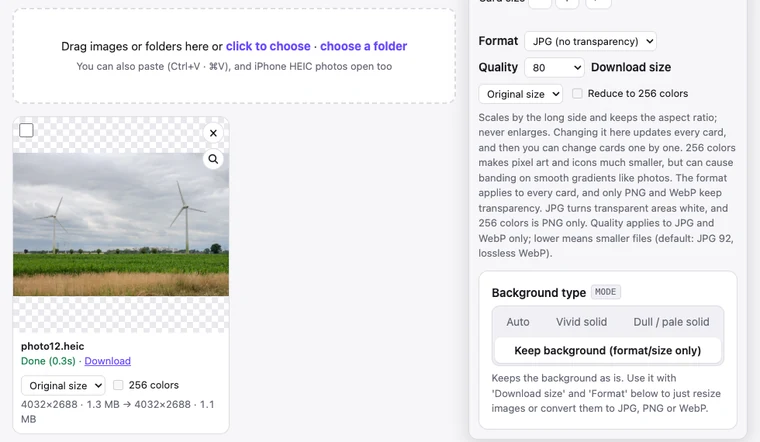

Convert HEIC to JPG: iPhone Photos in Bulk, No Upload
Most photos taken on an iPhone are saved as HEIC. They open fine on iPhones and Macs, but many Windows PCs, websites and older programs can't open or accept them. Here's how to convert HEIC photos to JPG in bulk with BGPeel, along with times and file sizes measured on real photos.
What is HEIC?
HEIC is the HEIF image format using HEVC (H.265) compression. Apple has made it the iPhone camera's default since iOS 11. Its advantage is size: at similar quality, files are smaller than JPG. The photo used in this guide was 1.3MB as HEIC; converted to JPG at BGPeel's default quality it became 1.9MB, about 1.4 times larger.
The drawback is compatibility. Chrome, Edge and Firefox can't open HEIC on their own; Chrome 155, which we tested while writing this, couldn't either. Windows often can't open HEIC out of the box and needs extensions from the Microsoft Store (the HEVC one is paid). Plenty of places, such as review forms and official document uploads, still accept only JPG or PNG.
How to convert with BGPeel
- The link above opens the tool with “Background type” set to “Keep background” and “Format” set to JPG. If you came in another way, choose those two.
- Drop HEIC photos or a folder onto the page. Many at once and subfolders are fine. The first time you add a HEIC, the converter (about 600KB to download) is fetched once.
- Optionally choose “Quality” and “Download size”, using the measurements below as a guide.
- Click “Convert”, then use each card's “Download” or “Download zip” for everything. File names stay the same; only the extension changes to .jpg.

Measured times and sizes
We used two HEIC photos released by Aaron Rust under CC0 (public domain). One is the untouched original at 8256×5504 (about 45 megapixels, 4.3MB); the other was scaled to 4032px wide, the width of an iPhone photo, and saved again as HEIC at 4032×2688 (1.3MB). Measured in Chrome 155 on an Apple M1 MacBook.
| Download settings | 4032×2688 (HEIC 1.3MB) | 8256×5504 (HEIC 4.3MB) |
|---|---|---|
| JPG, default quality (92), original size | 1.9MB | 8.3MB |
| JPG, quality 80, original size | 1.1MB | 4.6MB |
| JPG, quality 60, original size | 756KB | 2.8MB |
| JPG, quality 80, 2048px | 320KB | 296KB |
| JPG, quality 80, 1024px | 95KB | 78KB |
| Open time / convert time | 0.9s / 0.35s | 4.1s / 1.6s |
Open time runs from adding the photo until its card preview appears, and the first one includes fetching the converter. That's around a second per photo, and computers process several at once. Very large photos like the 45-megapixel one use a lot of memory and can be slow on phones.
Which quality to choose
At original size and default quality (92), JPGs come out larger than the HEIC, as the table shows. That's expected, because HEIC is simply the more efficient format. If you want roughly the HEIC's size, quality 80 worked well: the 4032×2688 photo at quality 80 was 1.1MB, slightly smaller than the original HEIC (1.3MB).
How much does quality change? Taking macOS's own rendering of the HEIC (what the iPhone Photos app shows) as the reference, the JPG BGPeel made at default quality differed by 1.0 level per pixel on average (on a 0–255 scale). That's invisible to the eye.

For photos you'll send in a messenger or post to a blog, also setting “Download size” to 2048px makes the biggest difference. At quality 80 and 2048px the file was 320KB, about a quarter of the original HEIC. More ways to shrink files are in Reduce image file size.
Good to know
- Rotation and flips: iPhones store how a photo should be turned instead of rotating the pixels. BGPeel applies that information so photos come out upright. We compared standard HEIF test files with rotation (90°), flipping, rotation plus cropping, and tiled images against macOS's rendering, and all came out with the same orientation and size.
- Location and date: converted JPGs carry no metadata, such as GPS location, camera details or the capture date. That makes them safer to share, but if you're archiving photos to sort by date in a photo app, keep the HEIC originals too.
- Color space: iPhone photos usually use Display P3, a wider color space than standard sRGB. The JPG doesn't carry that color space information, so side by side with the original on a wide-gamut screen, very saturated reds and greens can look slightly less intense.
- Live Photos and bursts: a Live Photo is a still photo (HEIC) plus a short video stored separately; only the photo is converted. For a HEIC containing several images, the primary image is converted.
- No upload: photos are never sent to a server and are processed only in your browser. Personal photos with location data never leave your device.
Getting JPGs from your iPhone in the first place
To skip converting altogether, change the iPhone's settings. Under Settings → Camera → Formats, choose “Most Compatible” and new photos are saved as JPG, though each one is larger. And under Settings → Photos, setting “Transfer to Mac or PC” to “Automatic” converts photos to a compatible format when you copy them to a computer by cable. For HEIC photos you've already taken, or HEIC files you received by email or messenger, converting them in one go with BGPeel is faster.
Frequently asked questions
- How many can I convert at once?
- There's no set limit. Adding a folder includes its subfolders, and the zip keeps the folder structure. With a very large number of photos, things can slow down depending on your device's memory, so batches of a few hundred are a good idea.
- Can I convert to PNG or WebP instead?
- Yes, choose PNG or WebP under “Format”. Photos get very large as PNG, so to keep files small use JPG or WebP with a quality setting.
- Does it work on a phone?
- Yes. Phones process one photo at a time to save memory, so it's slower than on a computer.
- Is it free?
- Yes, free with no image limits and no watermarks. The site is supported by ads.